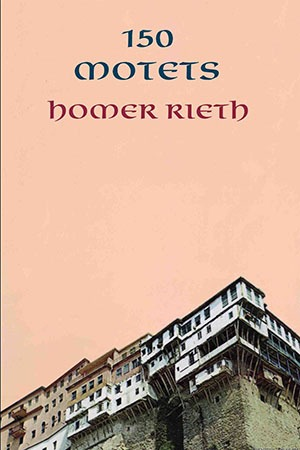

150 Motets
Homer Rieth

Description
Motet: a composition adapted to sacred words in the elaborate polyphonic church style; an emblem. Addressed to and inspired by the time-honoured figure of a mistress or muse, Homer Rieth’s sonnets cascade into each other across rocks of autobiography, memory and desire.
Description
Motet: a composition adapted to sacred words in the elaborate polyphonic church style; an emblem. Addressed to and inspired by the time-honoured figure of a mistress or muse, Homer Rieth’s sonnets cascade into each other across rocks of autobiography, memory and desire.
{kind=link}
Information
| ISBN | 9781876044794 |
| Release | 2013 |
| Pages | 186 |
About the Author
Reviews
Australian Book Review
‘Lords of nothing’ Geoff Page Australian Book Review April 2013, No. 350 Although the Melbourne publisher Black Pepper has a stable of major Australian poets (Stephen Edgar and Jennifer Harrison among them), it is also a house that likes to take chances. The favourable reception accorded Homer Rieth’s 359-page epic poem, Wimmera , in 2009 was definitely a punt that paid off. The book was shortlisted for The Age Book of the Year and became an ABC television program. Rieth’s new book, 150 Motets , though shorter, may be even riskier. It is a hard book to categorise. Sonnet sequence (cf. Shakespeare’s)? Epic with muse (Dante’s Divina Commedia and Petrarch’s Il Canzoniere )? Spiritual autobiography (Kazantzakis’s Report to Greco )? Daybook (Thoreau’s Walden )? All of these are possible descriptions. Apart from ‘Slaying the Dragon’, a short prose memoir of visiting the monasteries at Mount Athos in Greece, Rieth’s collection comprises ( pace the title) 154 sonnets, which are also called, with some justification, ‘motets’. A motet is remarkable for its polyphony and rep¬etition, and these are indeed important dimensions of the book. Technically, the sonnets are somewhat frustrating; they consist, almost always, of a strictly rhymed octet and an unrhymed sestet. The virtues of establishing a strict convention in the first part of a poem and then abandoning it in the second are not obvious. Although a few of the sonnets appear to use the pentameter normally associated with the form, most of Rieth’s lines are far longer and are best seen as free verse. The combination of free verse and strict rhyme in the sonnet’s first eight lines can lead, quite often, to a certain awkwardness of tone. Similarly, long epistolary sequences addressed to a muse (or patron) are always hard to carry off. Rieth’s ‘Lola’, like Shakespeare’s Mr W.H., is a fairly shadowy figure, despite the vivid-enough reminiscences of times spent together. Like other muses, Lola is inaccessible, perhaps in this case more due to geography than to anything else. There are moments when Rieth shows uncertainty about his ambitious project. One is when he refers to his efforts as a ‘wilderness of words’. He wonders elsewhere if the readers of his ‘little book’ will be ‘of mind to set sail / upon a boat as frail as this?’ Poem ‘126’ opens with the line: ‘Sometimes I’m tempted to say too little.’ With his somewhat expanded sonnets, this is a temptation to which the poet rarely succumbs. Rieth’s use of the longer line also seems to encourage him into prophetic stances, reminiscent of Walt Whitman in Leaves of Grass (1855) or Kahlil Gibran in The Prophet (1923). If 150 Motets is a spiritual autobiography, it is also something of a theological exegesis. Though Rieth uses the word ‘soul’ as if it were unproblematic, he does give even the agnostic reader a convincing sense of a lifelong spiritual quest and of the author’s need to look beyond simple dogma into something less easily defined. A few more lines from poem ‘126’ may serve to illustrate both the difficulties and the strengths of Rieth’s approach. He tells Lola that ‘saying nothing really is / the only way to understand, what otherwise would seem absurd, / as if, finally, knowing everything means nothing - no more than to exist // could equate to this, to say that one lives - that one is, in the end, alone - / inconspicuous, inconsequential, short-lived as weather, as are the barn swallows / in the autumn air...’ Instructive here is the manner in which the poet rescues himself from abstraction with the telling image of ‘the barn swallows / in the autumn air...’ One is, however, reminded at the same time of Wallace Stevens’s ‘Sunday Morning’, which ends with much the same point, but more discipline: ‘And, in the isolation of the sky, / At evening, casual flocks of pigeons make / Ambiguous undulations as they sink, / Downward to darkness on extended wings.’ This is not to say, however, that Rieth doesn’t make some persuasive spiritual points. In poem ‘51’, for instance, he laments how we are the earth’s ‘ruination - plundering the skies, the seas, the soil - // we who are lords of nothing, lord it over all...’ He then concludes, not unconvincingly (though with a little exaggeration of time frame), with the assurance that ‘the day comes, the night is near, when the mother of all / shall give herself - a sacrifice - to her lord, the sun’. Robert Gray and Geoffrey Lehmann have praised Rieth’s work as ‘overheard private rhapsodies, in which the arcane and everyday mingle’. This does describe the private, almost ‘daybook’ nature of his letters to Lola. Gray and Lehmann have also described Rieth’s language as ‘ebullient’ and ‘rococo’, referring perhaps to the large number of words that will send readers scurrying off to the dictionary - or to Google. ‘Equiponderate’, ‘anacoluthon’, ‘eurhythmy’, and ‘armamentarium’ are just a few to get one started. These may be words that the average reader should know, but their presence in a line of poetry can have a jarring effect. Certainly there is scholarship here, but it is not worn lightly. It is hard to imagine the ideal reader for 150 Motets . He or she would need to have real spiritual concerns, a certain tenacity of purpose, a tolerance for abstract language - and perhaps be a fan of the motet form, with its emphasis on repetition and polyphony. Whether or not Lola, Rieth’s muse, has these qualities remains unclear, but we have to suspect that she must.